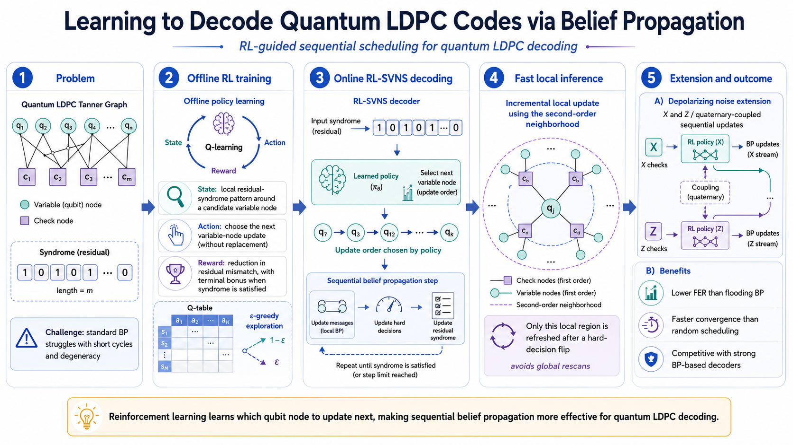
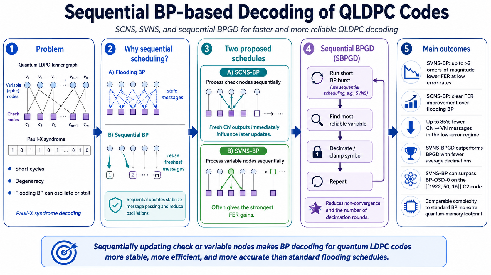
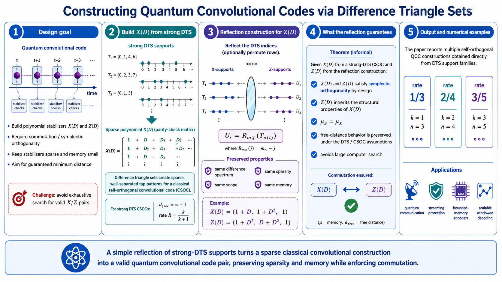
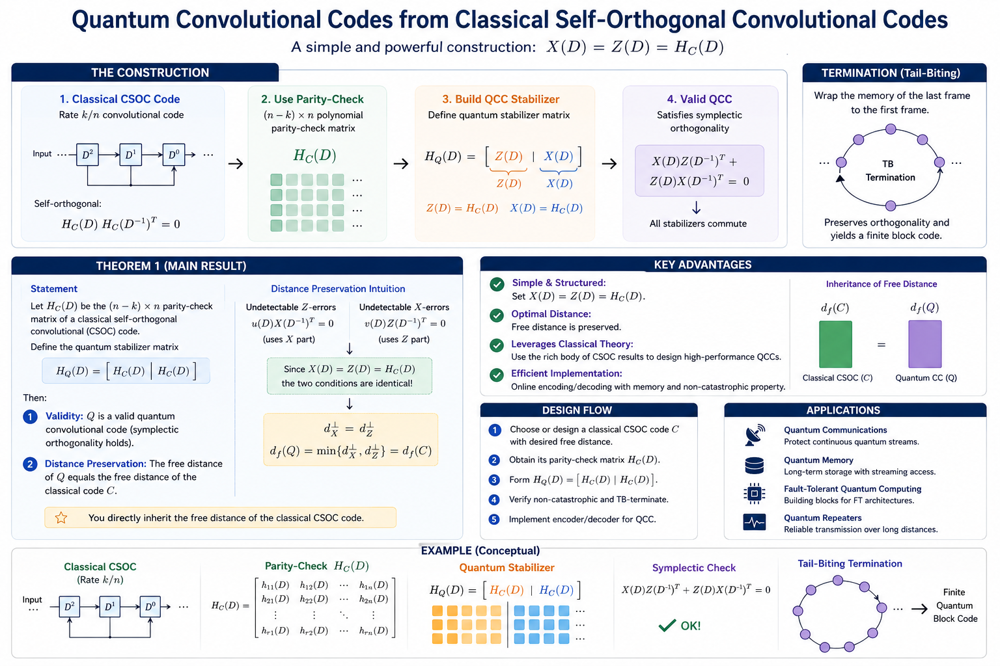
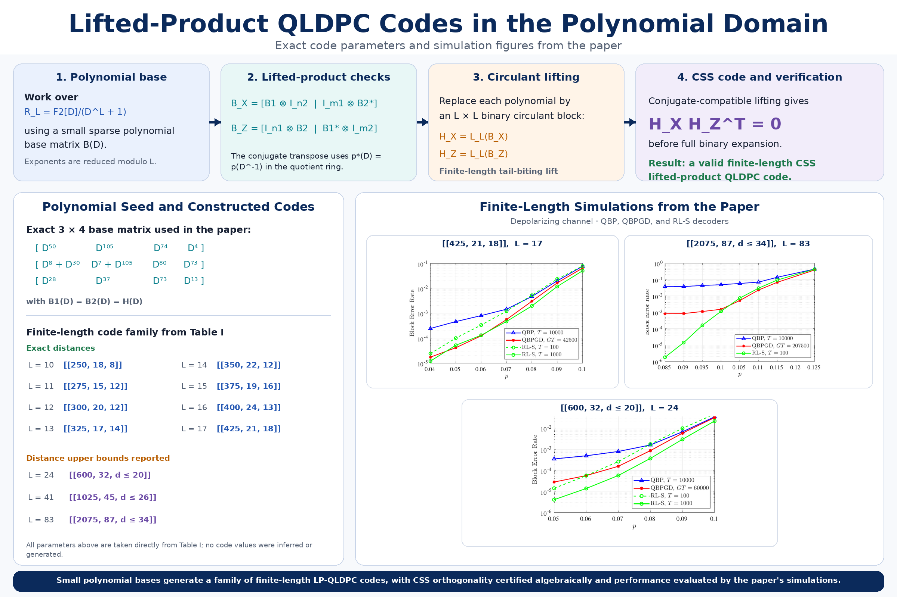

Learning-Guided Quantum LDPC Code Design
2026 - Present
Investigating learning-guided methods for discovering and evaluating structured quantum LDPC code families.
Investigating learning-guided methods for discovering and evaluating structured quantum LDPC code families.
Developing scalable construction techniques for quantum error-correcting codes, with emphasis on structural validity and practical decoding.
Reinforcement learning selects sequential belief-propagation updates to improve QLDPC decoding performance and convergence.

Sequential node-update schedules improve the reliability and efficiency of belief-propagation decoding for QLDPC codes.

Difference triangle sets construct sparse quantum convolutional codes with guaranteed commutation, controlled memory, and prescribed minimum distance.

Classical self-orthogonal convolutional codes yield valid quantum convolutional codes while preserving free distance.

Polynomial-domain lifted-product constructions generate finite-length CSS QLDPC codes with verified orthogonality and simulated decoding performance.
